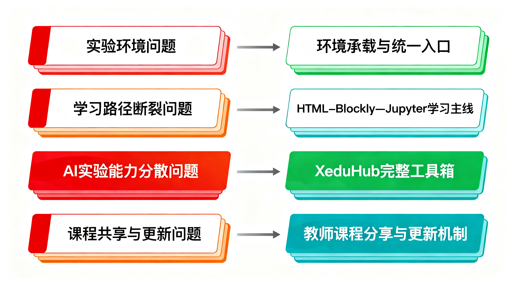
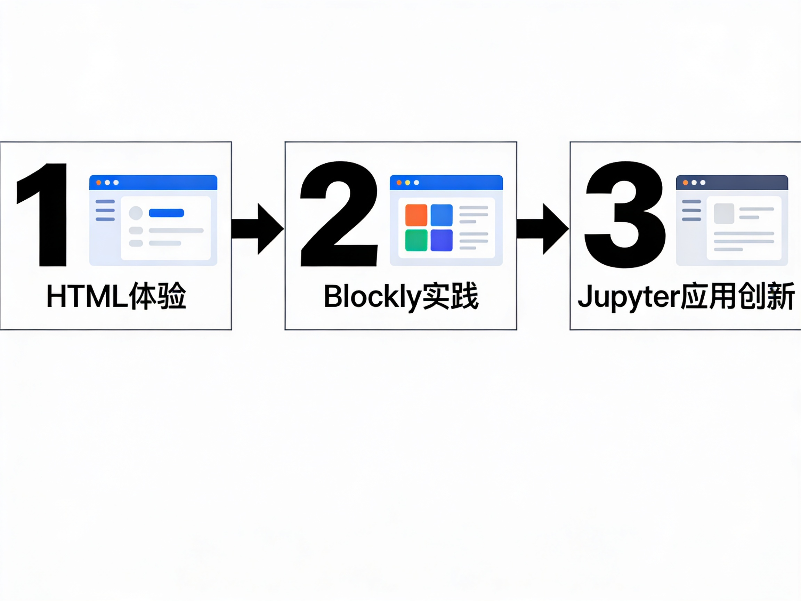
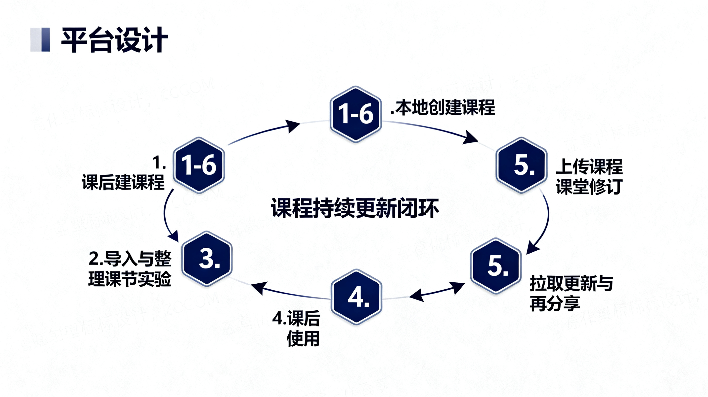

| 图编号 | 名称 | 主要用途 | 关键回答的问题 |
|---|---|---|---|
| 图 A | 项目总体架构图 | 说明系统是平台而不是单点工具 | 宿主、工作台、服务层、XEduHub、课程资源层如何关联？ |
| 图 B | 核心问题到解决路径映射图 | 放在背景部分讲清“为什么做” | 四类问题分别由哪类平台能力回应？ |
| 图 C | HTML—Blockly—Jupyter 学习主线图 | 突出学习 progression | 为什么三者不是并列入口，而是连续主线？ |
| 图 D | XEduHub 工具箱支撑图 | 说明 XEduHub 的底座角色 | XEduHub 支撑了哪些能力？与 Blockly / Jupyter 的关系是什么？ |
| 图 E | 教师课程分享与更新机制图 | 说明平台闭环 | 课程如何创建、分享、上传、同步、修订、再使用？ |
| 图 F | 典型课堂应用流程图 | 说明课堂落地路径 | 教师和学生在一节课中如何使用这个平台？ |
核心图预览


Roil 版本候选图



现有图片如何处理
现有 `p2 / p3 / p6 / p9` 这批图，适合保留为背景辅助图或临时占位图，不再作为最终论文级核心图使用。 它们可以继续在 PPT 中承担气氛、引入或过程辅助表达，但真正的核心解释应该由图 A-F 承担。
当前建议
这一页现在同时放了“可控结构图版本”和“Roil 生成版本”。下一步应当由你先判断： 是保留结构更可控的 A-F 版本，还是选择某些 Roil 图作为更接近成品汇报页的图像底图。 一旦方向确定，我再继续把它们收束到正式 PPT 中。
如果下一步继续优化图片，优先改的是“编号、分区、短标签和图注”，而不是继续追求更炫的 AI 视觉风格。